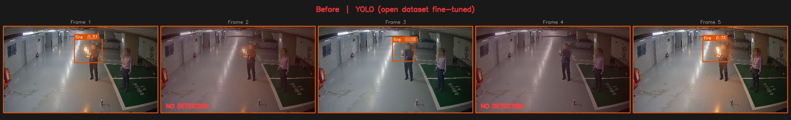
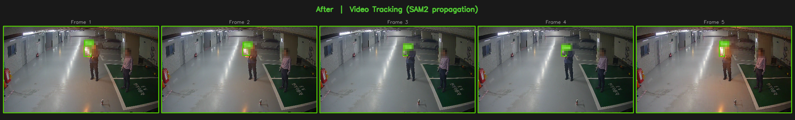
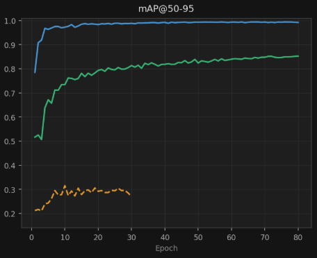
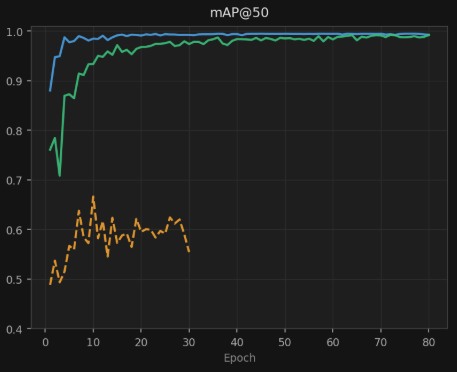

범용 CCTV 환경 화재·연기 소형 객체 탐지 자동화 · 단독 개발
계약 조건상 발주처명은 비공개이며, 업종만 표기합니다.
CCTV에서 보이는 불꽃·연기를 자동으로 어노테이트해야 했습니다. 실제 CCTV 영상에서 화재·연기는 이미지 면적의 1~5%에 불과한 소형 객체라 자동 어노테이션이 쉽지 않았습니다.
Roboflow 공개 데이터셋으로 YOLO를 파인튜닝했으나, 학습 데이터와 실촬영 환경의 bbox 크기 분포가 달라(도메인 갭) 실제 CCTV bbox 크기 기준 mAP가 0.6대에서 정체됐습니다.
불·연기는 구조적으로 같은 위치에서 연속 프레임에 걸쳐 확산되는 특성이 있습니다. 매 프레임 독립 탐지보다 시간축 연속성을 활용하는 비디오 트래킹이 적합하다고 판단했습니다.



